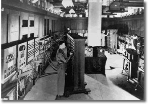
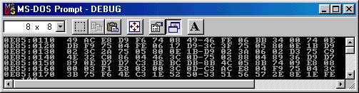
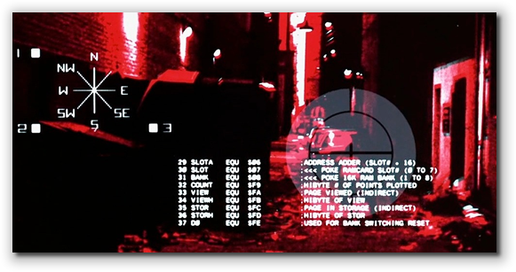
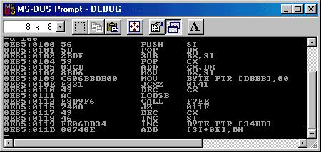
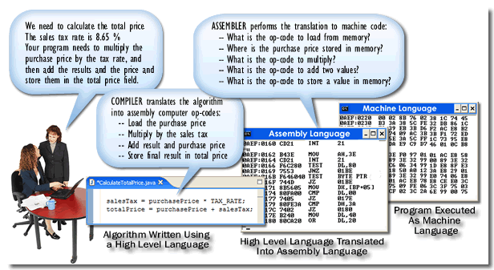
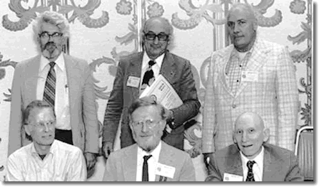

Before we dive a little further into Java programming, let's take a look at where Java came from, on the theory that George Santayana was right when he wrote, "Those who ignore history are doomed to repeat it."
It's almost impossible to understand why Java works the way it does without understanding a little bit about other computer programming languages—both modern and "ancient"—and how and why they were developed. In this section, you'll learn a little about the history of computers, and computer programming.
As you saw previously, modern computer systems (in general) consist of at least four pieces:
- A processing unit (CPU) that performs simple arithmetic and comparisons.
- Memory that can store information: both data and instructions used by the processing unit.
- Input/Output devices that allow you to load information into memory and to see the results of your calculations.
- Storage devices that allow you to keep your calculations and your programs for later reuse.
The instructions that tell the processing unit which calculations to perform, and which information to use in those calculations, is called a program. Programming is the art (or science, or even black-magic, if you prefer) of creating programs.
Let's see where programming came from. We'll look at the dawn of the digital era in this lesson, and cover the development of structured and object-oriented programming later.
Programming Generations

Modern digital computers were developed in the late 1940s in Germany, England, and the US. These first computers had a processing unit, memory, and input/output devices, just like the computers we use today, but, surprisingly, they didn't have programs. Instead, these machines were "wired" to perform a specific function , just like the inexpensive 4-function calculator you can purchase at K-Mart.Memory, in these early computers, was used only to store the data required for a calculation. To change the calculation performed on a computer like the Eniac, shown here, a team of several people worked for about a week "rewiring" the machine so that it carried out a new set of instructions.
The first real breakthrough in programming, (as we know it], came when John von Neumann realized that memory could be used to store computer instructions along with data processed by the computer. This idea, called the stored program concept, means that you can use the same computer to play Pacman and to balance your checkbook—you simply change its program.
Machine Language
The key to understanding these early stored-program computers—as well as the computers we still use today—is to realize that every CPU understands only one language. This language is called machine language.

As you can see by looking at the illustration, machine language is not very much like human language, for two reasons:
- First, all machine language is a numeric language,
because the memory inside your computer can only store
numeric data. Even when you work with text (such as
viewing this web page), the computer is working
with binary numbers. Because of this, writing machine
language programs is very slow, tedious, and
error-prone, as illustrated here:
Notice that the process involves three translation steps:- From problem to the logical solution. This solution is called an algorithm. An algorithm represents the detailed, unambiguous, logical steps needed to carry out a particular task. (In this case, the solution in the left-hand balloon represents the algorithm to calculate the total price of a taxable item.)
- From algorithm to the instruction set. The solution must be translated into the specific low-level operations that the CPU knows how to perform, such as fetching a number or performing addition.
- From instruction set to the numeric op-code that makes up the machine language program, and that comprises the only kind of program that the CPU actually understands.
- Second, every different CPU family uses a
different machine language. The machine language
for the Intel 80x series chips is entirely different from
the Sun SPARC, IBM Z-Series or the new low-power ARM
chip you have in your Netbook, or the 6502 chip used in
the Apple II and the first T-series of Terminators:

Because of this, machine language programs are inherently non-portable; you can't run your copy of Word for Windows, for example, on your iPad or iMac.
The Second Generation
Despite the difficulties of using machine language, the number and size of the programs written expanded dramatically in the late 1940s and early 1950s. Machine-language programming were difficult to write, but creating them was a whole lot easier, and certainly less expensive, than building new "hard-wired" computing machines or employing thousands of "human computers" performing calculations the hard way.
Early "computers" at work, summer 1949. In the terminology of
that period, computers were employees—typically female—who
performed the arduous task of transcribing raw data from rolls of
celluloid film and strips of oscillograph paper and then, using
slide rules and electric calculators, reducing it to standard
engineering units.
—Dryden Flight Research Center Photo Collection
These early "lean-and-mean" machine language programs quickly became very large. Soon, they were too large to easily understand and maintain.
If something goes wrong in one part of a machine language program, then the programmers have to create a print-out showing the values in each memory cell when the error occurred—(this is called a "core dump"); it looks very similar to what you see with the MemoryView program.
Core dump in hand, the programmer then must translate the values stored in memory into the basic instructions that the computer can perform: adding two numbers, perhaps, or storing a value at a particular location. Only after the the raw machine values are translated into their corresponding computer instructions, is the programmer ready to unravel the problem.
Programmers soon discovered that the computer itself could be put to work performing the painstaking but tedious task of translating memory values into the corresponding mnemonic "operation code" (or op code), so that one part of the debugging chore was lightened. Those discoveries lead to the next generation of ancient computers.
Assembly Language
Assembly language, invented at the dawn of the 1950s, was the first big step up from machine language; but, it wasn't really all that big of a step. Assembly language is simply a one-for-one mnemonic replacement for machine language. Instead of entering the numbers 54 24 66 9C FE C2 84 92 into memory, the assembly language programmer can write something like this: LDX 24, [669C].
Here's a portion of the same Intel machine language
program I showed you earlier, this time in
assembly language, as well as machine language.
As you can see, the location where each instruction
is stored in memory is still displayed on the left.
The machine language instructions are now displayed
one instruction (or op code) per line. (Note that
some instructions are very short—a single byte—while
others can take several bytes).

The third column from the left displays the assembly language mnemonic instructions that the assembly language programmer uses in place of the machine language instructions. To subtract 1 from the memory location named CX, for instance, the programmer writes DEC CX, instead of the actual numeric code (49) understood by the CPU.There two important points to understand about assembly language:
- Even though assembly language makes programmers more
productive, they still have to write one line of
assembly language code for every machine instruction.
Here's an illustration that shows the process of
programming in assembly language:
Notice that the programmer still needs to perform the same two translations as were required with machine-language programming: from problem statement to algorithm, and from algorithm to the CPU's instruction set. - The second point is to remember that computers don't understand assembly language at all, only machine language. After writing an assembly language program, the programmer has to convert it into machine code before the program will run it. This is done using a program called an assembler.
Libraries and Interpreters
Computers follow their programmed instructions in a
literal-minded, mechanical way. You can't just
tell your computer to "print the budget report"; you
have to explain every single tiny step.
While powerful, your computer is much more like Dustin
Hoffman in the film Rain Man, than the Giant Brains
predicted in the 1950s.
When you program in machine or assembly language, though, things seem even worse. Something as simple as printing a sentence on the screen can take half a page of code; and often, it's the same half page of code that you've written a dozen times already.
Can't the computer be put to work remembering all of those thousands of tiny details, so you, the programmer, don't have to? You bet; that's exactly what the early assembly-language programmers did.
To lessen the burden of repetition, and to increase productivity, programmers started to create libraries of code that performed common tasks. Along with these libraries, they also started inventing "higher-level" versions of assembly language. In these higher level languages you could:
- Combine many lines of assembly code into a single instruction, called a macro. Instead of writing 50 lines of code to print a single line of output, you'd use only one.
- Avoid having to manually translate your program into assembly or machine language; instead, you used something called an interpreter.
Instead of using an assembler, these systems used a second program running on the computer to read each "high-level instruction" and produce machine code. This second program, (the interpreter), only generated machine code when the program actually ran.
Virtual Assembly Languages
These high-level interpreters not only made programmers more productive, but they also addressed another problem that afflicted machine and assembly-language programs: portability.
Early computers were very expensive and individually built—they were definitely "one of a kind" machines. Because of this, when a new computer was developed, companies often found that the programs they'd written for their previous machines would not run on new models.
The interpreter provided a clever solution
to this problem: create an "ideal" machine language,
along with a matching assembly language,
and then simply write an interpreter for the ideal
language when a new machine was released.
The most popular of these 1950s virtual machine languages were
Speedcode (developed by John Backus at IBM),
Shortcode (developed by John Mauchley of
Eniac fame), and FlowMatic (developed by
Grace Hopper).
Today, Java and Microsoft's new .NET platform both use a similar concept. With Java, the virtual machine language is called bytecode, and you run by using a Java Virtual Machine or JVM. Microsoft .NET's virtual machine language is called MSIL (Microsoft Intermediate Language), and its interpreter is called the CLR or Common Language Runtime.
Compilers
By the end of the 1950s, both computers and interpreters had become widely entrenched in the business community. Interpreters and virtual assembly languages such as Speedcode, and Shortcode, allowed programmers to become much more productive. These much more productive programmers did what all productive people do—they produced more stuff; in the programmers' case they produced bigger and better programs.
Well, bigger anyway.
As programs got bigger, the weaknesses of the interpreter approach became obvious. Because so much of the interpreter's time was spent translating from "virtual instructions" into the native machine language, interpreted programs ran much slower than hand written machine language programs. And, in those days, people were cheap, but computers were expensive.
A programmer named Grace Hopper, (who also popularized the word "bug" in the programming world), is credited with an insight that seems obvious in retrospect. Instead of translating virtual machine code into native machine code every time you run the program, just do the translation once. Save the translated code on disk or tape, and reuse it every time you need to run your program. This invention was called the compiler. Today, most programming languages use some form of compiler.
Hopper wrote the first compiler for the A-0 programming language in 1952.
One way to understand the difference between
an interpreter and a compiler is to think about the
different ways we convert between human languages. The
interpreter is kind of like the interpreters at the
United Nations. The speakers' words are translated as
they occur.
A compiler is more like the translator of a book. The translator
produces a new manuscript that is independent of the original.
The Third Generation
Once people realized that computers could translate virtual assembly languages like Speedcode and Flowmatic into machine code, they began to wonder if, perhaps, computers could do the same for more "natural" languages. (Natural for human beings, that is.) This marked the beginning of the third generation of computer languages, called High Level Languages, or HHL.
The basic idea behind a high-level language is
straightforward: instead of writing a computer program
in terms that the computer uses, write it in terms of
the problem to be solved like this:

Note that with high-level languages, the programmer only has to do one translation: from the problem to the logical steps needed to carry out the task. These steps, you'll recall, are called an algorithm, and for this reason, high-level languages are often called algorithmic languages.Since different people want to solve different kinds of problems, different high-level languages were developed. Let's look quickly at the "big four".
FORTRAN
Developed by John Backus at IBM in the mid-to-late 1950s, the FORmula TRANslator language let engineers write programs using familiar notation. Beginning in 1954, FORTRAN also set the standard for estimating the length of a programming project, when Backus predicted it would be finished in six months. The first version was delivered in 1958.
COBOL
In the same way that FORTRAN turned engineers into programmers, COBOL, the Common Business Oriented Language, attempted to recruit accountants and other business professionals into the programming fold. And, it was wildly successful. More programs have been written in COBOL (in the last 40 years) than in any other language.
COBOL was created by a committee called the Conference on Data System Languages (CODASYL). It was let by led by Joe Wegstein of NBS (now NIST), who was an early computer pioneer. The driving force behind COBOL, though, was Grace Hopper.
Algol
In the 1950s, if you wanted to program in FORTRAN, you had to purchase an IBM mainframe computer, and, out of the goodness of their hearts, IBM threw in a FORTRAN compiler for free. (Well, maybe not for free.) If you wanted to run FORTRAN on another system, however, you were out of luck.
Like COBOL, Algol (the Algorithmic Language) was the product of a committee of the "best-and-the-brightest" intent on producing a common numeric and scientific programming language that would not be tied to a particular vendor like FORTRAN.

This photo, taken at the 1974 ACM Conference on the History of Programming Languages, shows six of the original participants who attended the 1960 Algol Conference in Paris. Top row: John McCarthy (LISP), Fritz Bauer, Joe Wegstein (COBOL). Bottom row: John Backus (FORTRAN), Peter Naur, Alan Perlis.
While not as commercially successful as COBOL, it was, none-the-less, a primary influence on the structured programming languages which would follow it in the 1960s and 1970s.
LISP
The last of the "Big-4" high-level languages begun during the 1950s was LISP. Begun by John McCarthy at MIT in 1958, LISP (the LISt Processing language) is quite a bit different than the other three languages, and requires a bit of mathematical sophistication to learn. Instead of using algebraic notation, for instance, LISP uses notation derived from Lambda Calculus, and was the first of a family known as functional programming languages. (If you take CS 250 here at OCC, you'll spend a little bit of time exploring a similar functional language known as Scheme.) LISP is still commonly used in the Computer Science specialization known as Artificial Intelligence.

Early History of Programming Summary
- Prior to 1950, electronic computers were hard-wired to perform calculations. Mathematician John von Neumann proposed the stored program concept where numeric machine instructions were stored in memory along with a program's data.
- Machine language programs use numeric instructions that the CPU can interpret. Every CPU family has its own specific native instruction set which will not work on a different type of CPU.
- Second-generation computer language advances consisted of assembly language, macros, libraries, interpreters, virtual assembly languages and compilers.
- Third-generation, or high-level programming languages (HHL), use a compiler or interpreter to convert algorithmic, natural-language-like programming code into machine-language that the computer can execute.
- In the 1950s, different languages were developed to allow programmers to write programs using their existing skill sets. The "big four" languages were FORTRAN for scientific programs, COBOL for business programs, Algol for general-purpose computing and LISP for artificial intelligence.